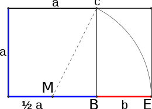

Successione di Fibonacci
Dedichiamoci allo studio della successione di Fibonacci dato che giocherà un ruolo importante in molti campi appartenemente slegati. The sequence was given its name in May of 1876 by the outstanding French mathematician François-Edouard-Anatole-Lucas (Fig. 2.1),* who had originally called it "the series of Lamé," after the French mathematician Gabriel Lamé (1795-1870). It is a bit ironic that despite Fibonacci's numerous mathematical contributions, he is primarily remembered for this sequence that bears his name.
La definizione della successione {Fn} dei numeri di Fibonacci:
F0 = 0, F1 = 1, Fn = Fn-1 + Fn-2 per n > 1
Fibonacci's Rabbits
The original problem that Fibonacci investigated (in the year 1202) was about how fast rabbits could breed in ideal circumstances.
Suppose a newly-born pair of rabbits, one male, one female, are put in a field. Rabbits are able to mate at the age of one month so that at the end of its second month a female can produce another pair of rabbits. Suppose that our rabbits never die and that the female always produces one new pair (one male, one female) every month from the second month on. The puzzle that Fibonacci posed was...
How many pairs will there be in one year?
At the end of the first month, they mate, but there is still one only 1 pair.
At the end of the second month the female produces a new pair, so now there are 2 pairs of rabbits in the field.
At the end of the third month, the original female produces a second pair, making 3 pairs in all in the field.
At the end of the fourth month, the original female has produced yet another new pair, the female born two months ago produces her first pair also, making 5 pairs.
The following identity, known as “Cassini's identity”, was presented by the Italian astronomer Giovanni Domenico Cassini (1625–1712) to the Royal Academy (Paris) in 1680.
2.5.1. PROPOSIZIONE. Se Fn sono i numeri di Fibonacci, per ogni n > 0 vale la seguente identità (di Cassini):
Fn+1 Fn-1 - F2n = (-1)2
Si noti che tale identità può essere scritta tramite l'identità di Fibonacci come
F2n-1 + Fn-1Fn - F2n = (-1)n
Dimostrazione. Procederemo per induzione su n. Per n =1 si ha F2F0 - F12 = 1 ⋅ 0 -1 = -1, quindi C(1) è vera. Supposta vera C(n-1), ossia
Fn Fn-2 - F2 n-1 = (-1)n-1
si tratta di provare C(n). Ora, sostituendo nella C(n-1) (che stiamo supponendo vera) Fn-2 = Fn Fn-1, si ottiene
Fn (Fn - Fn-1) - F2n-1 = (-1)n-1
cioè
F2n - FnFn-1 - F2n-1 = (-1)n-1
che coincide con la C(n) cambiata di segno, a seguito della sostituzione Fn+1 = Fn Fn-1. Quindi C(n) è vera e l'identità di Cassini è stata provata per ogni n. □
Vogliamo ora trovare una "soluzione" della relazione ricorsiva, ossia una "formula chiusa" che ci permetta di determinare il termine n-esimo della successione direttamente come funzione di n e non dei termini precedenti. Prendendo come esempio il caso di una progressione geometrica.
an = r ⋅ an-1, a0 = k.
in cui la "soluzione" è
an = krn, n ≥ 0.
cerchiamo una soluzione della relazione ricorsiva
Fn = Fn-1 + Fn-2 2.5.1
che non tenga conto per il momento delle condizioni iniziali e che sia della forma
Fn = xn
per qualche x costante reale, da determinare. Sostituendo allora la soluzione xn nella (2.5.1) si ottiene
xn - xn-1 - xn-2 = xn-2 (x2 - x -1) = 0
tale equazione è soddisfatta banalmente per x = 0, soluzione che scartiamo, oppure per x soluzione dell'equazione:
x2 - x - 1 = 0
che prende il nome di equazione caratteristica della relazione ricorsiva di Fibonacci. Le radici sono
x1 = (1 + √5)/2, x2 = (1 - √5)/2
Si osservi che nessuna delle due soluzioni Fn = x1n o Fn = x2n. soddisfa le condizioni iniziali F0 = 0, F1 = 1. Tuttavia è facile vedere (si provi) che se x1n e x2n sono entrambe soluzioni di (2.5.1) allora anche una qualunque loro combinazione lineare del tipo
A1 x1n + A2 x2n
è soluzioni di (2.5.1).
Cerchiamo quindi soluzioni di tipo
Fn = A1 x1n + A2 x2n 2.5.3
con x1n e x2n sono le due soluzion di x2 -x -1=0 che soddisfano le condizioni iniziali
0 = A1 x10 + A2 x20, 1 = A1 x1 + A2 x2
si tratta di risolvere il sistema seguente
0 = A1 + A2
1 = A1 (1+√5)/2 + A2 (1- √5)/2
Si trovano le soluzioni x1 = 1/ √5 e x2 = -x1 = - 1/√5, che, sostituiti in (2.5.3) danno la forma chiusa dell'n-esimo numero di Fibonacci:
2.5.2 - DEFINIZIONE. Il numero
(1+√5)/2
prende il nome di rapporto aureo o proporizione divina.
Il rapporto più armonioso tra due lunghezze a e b era considerato infatti dai Greci quello tale che
φ = a /b = (a+b) /a
tanto che la facciata del Partenone è stata inscritta in un rettangolo avente queste proporzioni. La lettera φ richiama il nome dell'artista Fidia, che nelle sue sculture utilizzò spesso questo rapporto. Vale la seguente relazione
a /b = (a+b) /a = 1 + b/a = 1/a/b
si può scrivere dunque
φ = a /b = 1 + 1/φ
da cui discende l'equazione polinomiale a coefficienti interi
φ2 - φ -1 = 0
La soluzione positiva di tale equazione (univa ammissibile essendo φ una quantità positiva per definizione) porta al valore del rapporto aureo.
φ = a / b = (a+b)/b = (1 + √5)/2 ≈ 1.6160339887
La costruzione geometrica che permette, dato un segmento di lunghezza a, di costruire il segmento di lunghezza b tale che a/b sia il rapporto aureo, è illustrata in figura 2.5: si costruisce il quadrato ABCD di lato a, e dal punto medio M del segmento AB si traccia il segmento (di lunghezza √5a/2) MC. Il punti E intersezione della retta per A e B con la circonferenza di centro M e raggio BE è la lunghezza b richiesta.
Anche l'altra radice
φ* = (1 - √5)/2 = -1/φ ≌ -0.61803
gode di molte delle proprietà di φ.
La (2.5.4) dice che, quando n è grande, Fn è molto vicino al numero irrazionale φn/√5. Infatti, per n grande, essendo |φ*| < 1, φ*n diventa esponenzialmente piccolo, quindi trascurabile.
2.5.3 PROPOSIZIONE. Dato comunque un n > 0 esistono due interi positivi a e b tali che nel calcolo del MCD(a,b ) con l'algoritmo euclideo, il numero delle divisioni necessarie è esattamente n.
Dimostrazione. Basta scegliere a = Fn+2, b = Fn+1 rispettivamente l'(n+2)-esimo e l'(n+1)-esimo numero di Fibonacci. Infatti
sono esattamente n divisioni (Fn-k è diverso da zero fin quando k = n-1). I passi sono infatti i seguenti
(Fn+2, Fn+1) → (Fn+1, Fn) → (Fn, Fn-1) → ... → (F3, F2).□
Questa proposizione ci permette di determinare un limite superiore per il numero di divisioni necessarie per completare l'algoritmo euclideo partendo da due interi arbitrari. Vale la seguente proposizione dovuta a Lamé nel 1844.
2.5.4 PROPOSIZIONE. (Lamé) - a e b.